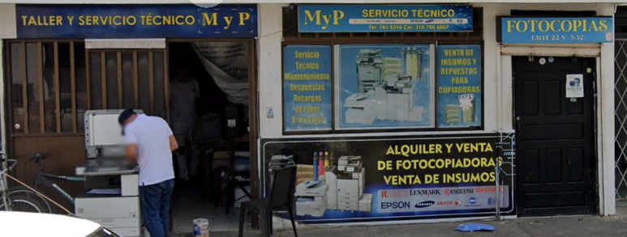

MYP Servicios Técnicos, fundada en 2009, ha evolucionado de una modesta papelería a un proveedor reconocido de servicios técnicos y venta de insumos de oficina. Su compromiso con la calidad y la satisfacción del cliente les ha permitido establecer relaciones sólidas con diversas instituciones educativas y competir exitosamente en licitaciones públicas.
